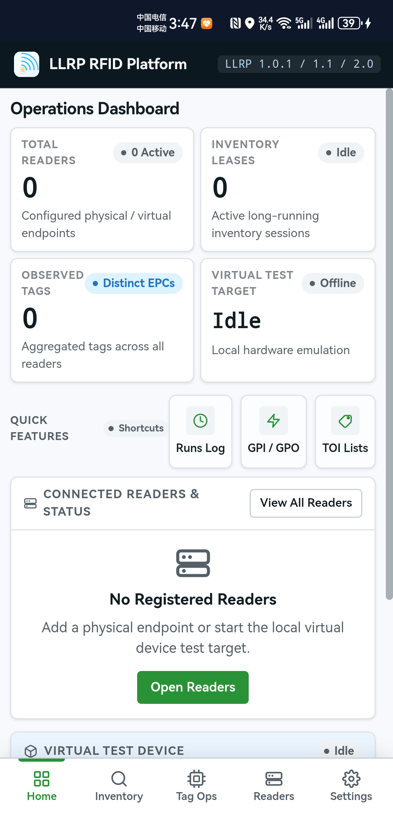

03 / MOBILE PDA CLIENT
LlrpReaderManager · Android 操作手册
LlrpReaderManager (Android APK) 是专为工业级手持 PDA、盘点枪与平板终端打造的移动端 RFID 客户端。 采用触控优先设计语言，支持 Wi-Fi 与移动网络连接现场读写器，满足仓储盘点、资产巡检与移动查验需求。
1. 安装与权限配置
- 从 Releases 页面下载
LlrpReaderManager-v2.0.5-android.apk（应用包名：com.llrp.readermanager）。 - 将 APK 文件传输至手持 PDA 或通过移动浏览器直接下载。
- 点击安装。若系统弹出“禁止安装未知来源应用”，进入系统设置勾选“允许安装未知应用”后完成安装。
- 首次启动时，授予应用必要的网络通信权限 (INTERNET / ACCESS_NETWORK_STATE)。
2. 网络与设备连接
手持终端通过局域网连接固定式读写器（如 Impinj R420）或同网段虚拟读写器：
- 确保 Android 设备已连接至与读写器处于同一网段的工业 Wi-Fi 或通过 USB/OTG 以太网转换器直连。
- 打开应用，在 Readers 页面点击 Add Reader，输入读写器的 IP 地址与端口（默认
5084）。 - 点击 Probe 按钮进行连通性检测，成功识别设备后点击 Enable 启用。
3. 触控巡检与盘存操作

- 开始盘点：在底部导航栏点击 Inventory，点击屏幕中央醒目的 Start 按钮，进入高频寻卡。
- 触控卡片展示：已识别标签以卡片形式展示，显示 EPC、最后识别时间、读取次数与信号强度 (RSSI)。
- 单标签操作：在列表中点击任意标签卡片，直接跳转至 Tag Ops 页面，执行针对该标签的 EPC / User 存储区数据读写。
- 停止与保存：盘点完成后点击 Stop，系统自动将本次运行记录存入本地 SQLite，并生成盘点汇总报告。
5. 低功耗与异常断连恢复
移动环境恢复方式：
在移动巡检过程中若 Wi-Fi 信号衰减、发生漫游切换或读写器断开，请先等待网络恢复，再回到 Readers 页面重新连接或启用设备，然后返回 Inventory 继续操作。平台会收敛失效会话，但不会在后台静默重放未完成的 ROSpec 或配置。